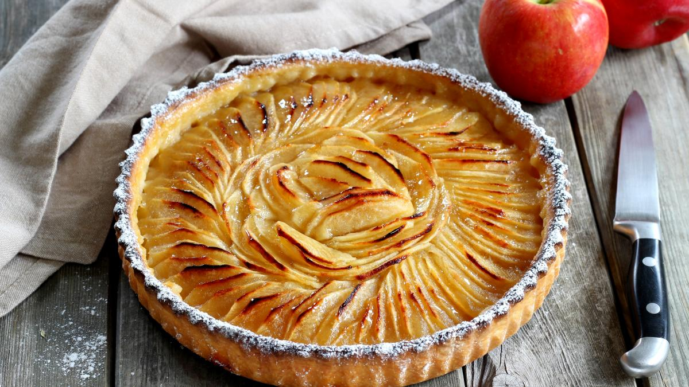

Gâteau au chocolat

Le gâteau au chocolat est un classique qui plait à tous les amateurs de chocolat. Il est facile à faire et peut être décliné de nombreuses façons : avec des noix, de la crème fouettée, du caramel...
Tarte aux pommes
La tarte aux pommes est un autre grand classique de la pâtisserie. Elle est simple à réaliser et peut être servie en toute occasion : pour le dessert, le goûter, ou même le petit déjeuner.
Cupcakes

Les cupcakes sont des petits gâteaux individuels qui ont la cote ces dernières années. Ils sont faciles à décorer et peuvent être personnalisés selon vos goûts. Parfaits pour les fêtes d'anniversaire ou pour une soirée entre amis.